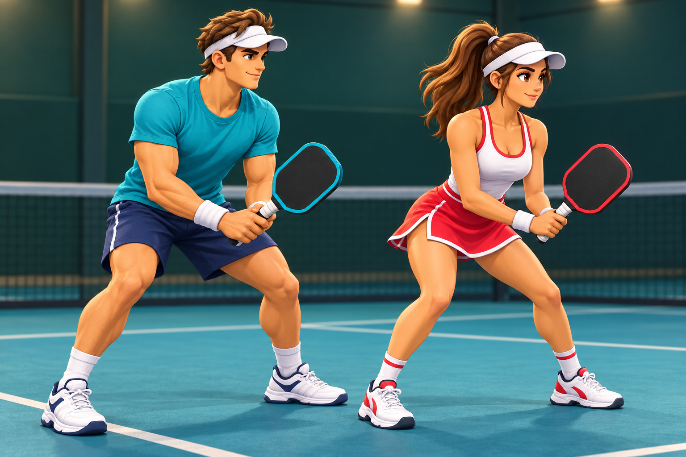

01 / CURRENT
High-density pixel
Crisp blocks and graphic contrast. The established build-40 direction.
Three live treatments of the same rig, plus a static concept for a future 3D build.
Crisp blocks and graphic contrast. The established build-40 direction.
The identical high-density silhouette with deeper material shading and pixel-level highlights.
All of the high-density pixel detail with animated directional light, stronger depth shading, and grounded character shadows.
This is a static concept frame, not the live rig. A playable version would require modeled bodies, clothing, hair, paddle meshes, a skeleton, weight painting, facial rigging, and new animation data.
